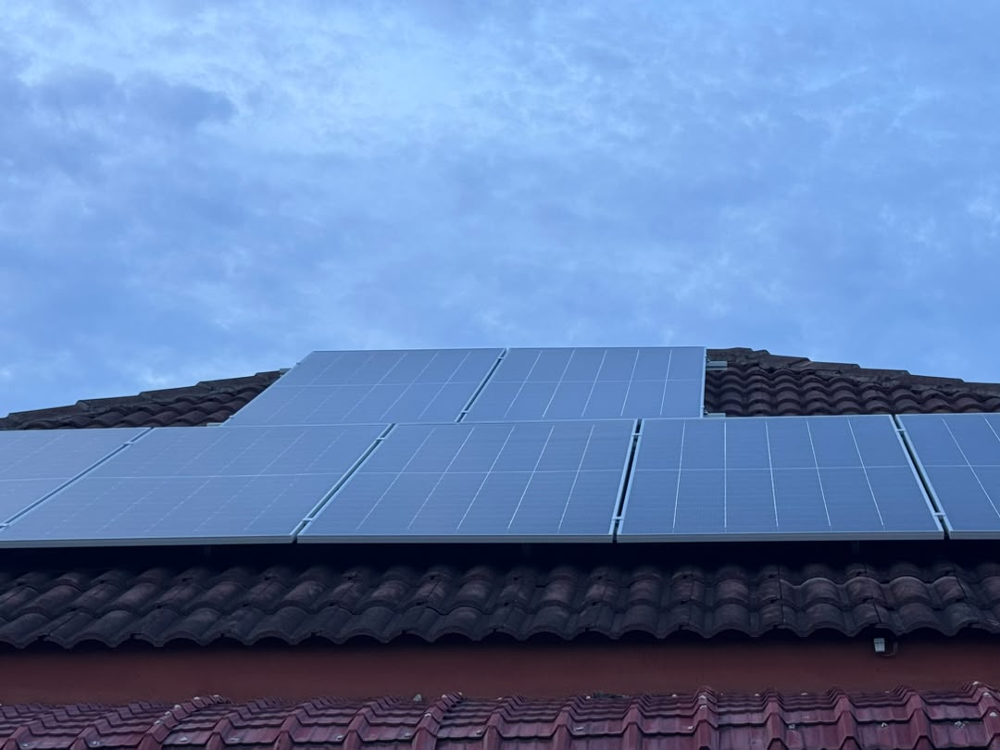
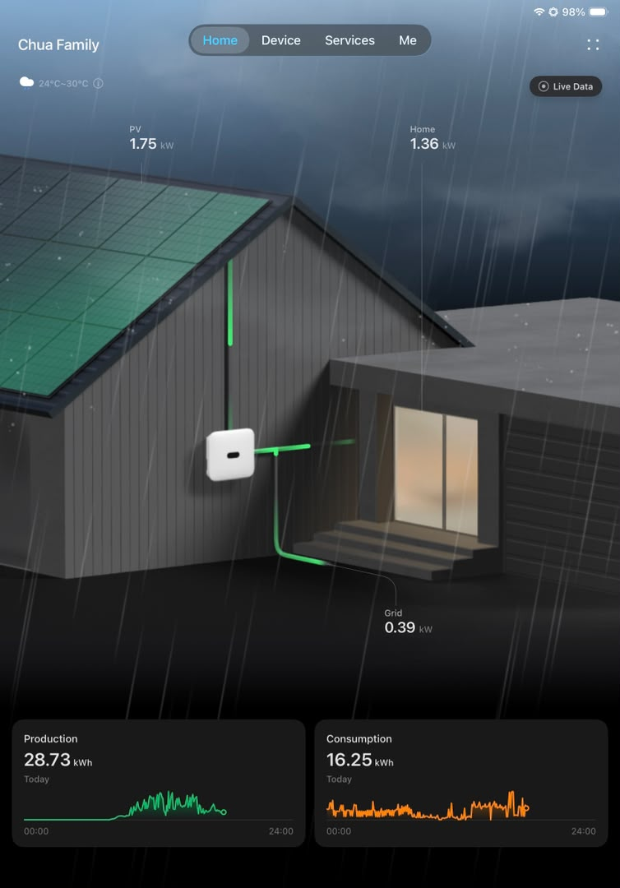
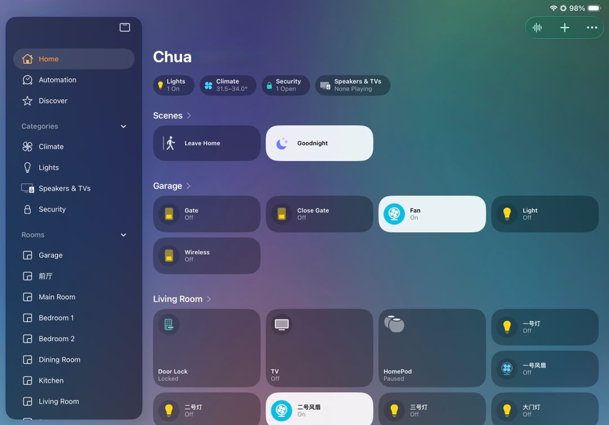
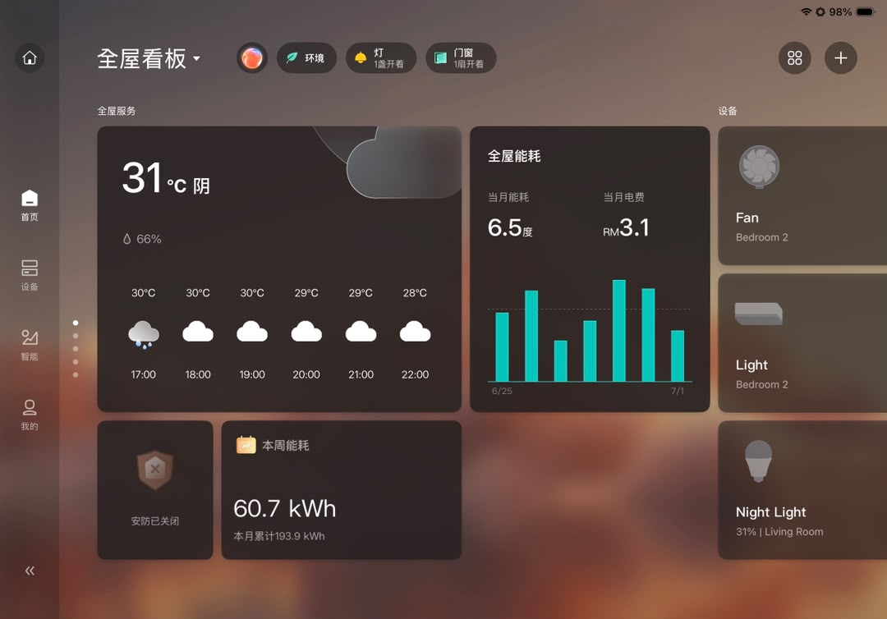

Data Science Student | Malaysia
Chua Sheng Yuan
Building data skills through real systems, smart homes, and practical technology.
Computer Science student majoring in Data Science at Multimedia University, interested in data analysis, IoT, solar technology, artificial intelligence, Aqara devices, and Apple HomeKit automation.
About Me
A practical learner connecting data, devices, and real-world problems.
I am Chua Sheng Yuan, a Computer Science student majoring in Data Science at Multimedia University. I am interested in IoT, data analysis, solar technology, and artificial intelligence. I enjoy learning how technology and data can be used to solve real-world problems, support decision-making, and create practical solutions.
I am currently looking for CS, IT, or Data Science internship opportunities where I can apply my technical knowledge, improve my skills, and contribute to real-world projects. I am hardworking, willing to learn, and comfortable working in a team environment.
Personal Tech Lab
Solar Energy, Aqara Devices, and Apple HomeKit Automation
My interest in smart technology became more hands-on after a solar power system was installed at my house. I started paying closer attention to renewable energy, monitoring apps, connected sensors, and how automation can make a home more efficient and easier to manage.
system.homeLab()
What I explored
I personally built and configured my smart home setup using Aqara devices and Apple HomeKit. Through device pairing, scenes, sensor-based control, and automation rules, I learned how IoT systems connect physical devices, network reliability, and user experience.
- Solar monitoring app
- Aqara app dashboard
- Apple HomeKit dashboard
- Sensor-based automation
- IoT device setup
Solar Panels

Monitoring App

HomeKit

Aqara

Skills
Stack and Strengths
Programming
Languages
- C++
- Java
- Python
- HTML
- CSS
- JavaScript
Data Science Tools
- Pandas
- PySpark
- Jupyter Notebook
Database
- MySQL
Software Tools
- VS Code
- GitHub
- Microsoft Office
Soft Skills
- Teamwork
- Communication
- Problem Solving
- Time Management
- Willingness to Learn
- Analytical Thinking
Featured Project
YouTube Data Analysis
analysis.youtubePerformance()
Analyzed YouTube video data to understand video performance.
Used Python, Pandas, and Jupyter Notebook to clean the dataset, perform exploratory data analysis, create visualizations, and interpret the results.
Result
Found patterns in views, likes, comments, and video categories.
Experience
Work experience that strengthened discipline and teamwork.
Waiter
Azuma Japanese Restaurant
Part-time Sushi Helper
Azuma Japanese Restaurant
Waiter
Bak Neong Restaurant
Part-time Waiter
Margaret T Restaurant
Contact